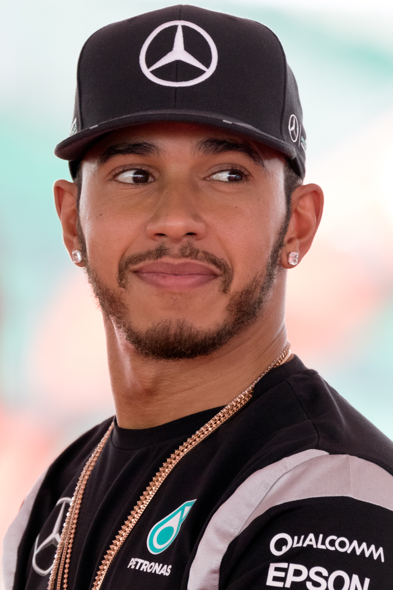

SINTESI DELLA STAGIONE 2020 - IL TRIONFO DI LEWIS HAMILTON
Era Turbo Ibrida • 17 Gran Premi disputati

Nonostante le enormi complicazioni dovute alla pandemia da Covid-19, la Formula 1 ha allestito un calendario eccezionale di 17 tappe su piste storiche come Mugello, Portimão e Imola. Lewis Hamilton ha dominato con la formidabile Mercedes W11 nera, eguagliando il record storico di 7 titoli mondiali di Michael Schumacher e superando il primato assoluto di vittorie in carriera (91 di Schumacher).
🏆 Campione del Mondo Piloti: Lewis Hamilton (Mercedes-AMG Petronas F1 Team) - 347 pt
🥈 Secondo classificato: Valtteri Bottas (223 pt)
🏁 Scuderia Campione Costruttori: Mercedes
🏎️ Numero Gran Premi: 17
LA MIGLIOR GARA DELL'ANNO: GRAN PREMIO D'ITALIA (MONZA) & GP DI SAKHIR
Circuito: Autodromo Nazionale Monza
In un'annata compressa disputata a porte chiuse a causa della pandemia, il GP di Monza ha regalato una favola indimenticabile: la penalità inflitta a Hamilton per essere entrato in pit lane chiusa e la bandiera rossa causata dall'incidente di Leclerc hanno aperto la strada a Pierre Gasly, che ha resistito con l'AlphaTauri agli assalti finali di Carlos Sainz regalando una vittoria miracolosa per soli 4 decimi. Pochi mesi dopo, a Sakhir, Sergio Perez ha firmato un'altra impresa vincendo da ultimo al primo posto.
IL SORPASSO PIÙ SPETTACOLARE & DUELLO DELL'ANNO
George Russell su Valtteri Bottas all'esterno a Sakhir
Chiamato a sostituire Hamilton positivo al Covid, George Russell ha stupito il mondo al volante della Mercedes W11. Precipitato a centro gruppo dopo un errore clamoroso dei meccanici al box, Russell ha rimontato con foga superando Valtteri Bottas all'esterno della velocissima curva 6, un sorpasso da brividi a ruote fumanti.